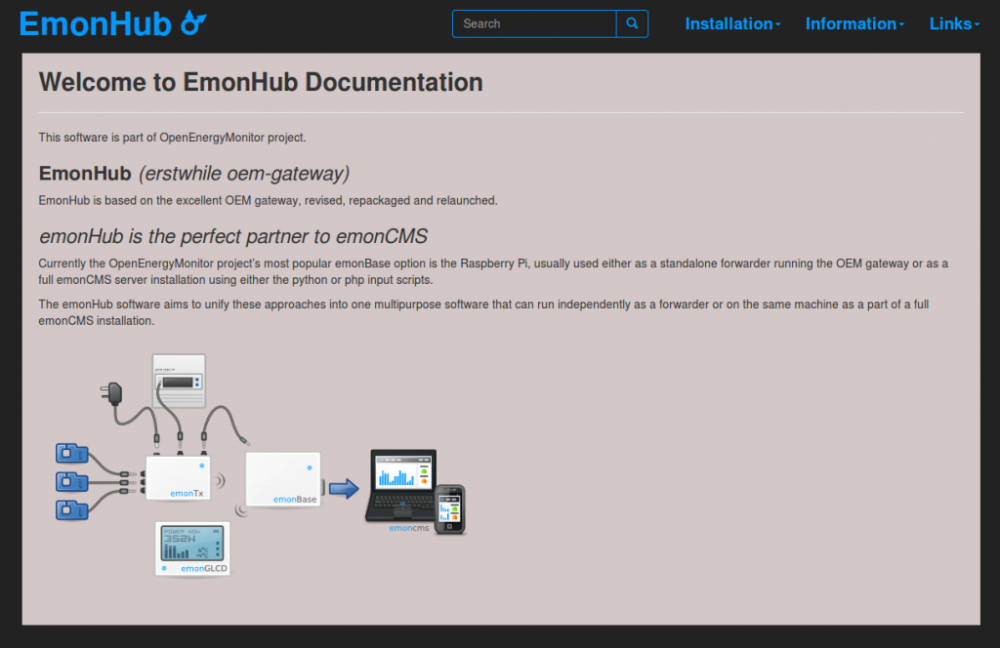

Thought Id highlight that's there's been a lot of development and discussion happening on the emonhub git repo lately (mainly between myself, Paul [pb66], Jerome and Dave McCraw [Schism]) on the next version of the oem_gateway which is called emonhub.
The repository is here:
and issue list here:
https://github.com/emonhub/emonhub/issues
One of the focuses for the discussion and development has been how best to cater for receiving different datatypes from the rfm12pi, not just integers. I.e: signed and unsigned longs for watt hour data.
This started with:
Node listener and dispatcher: https://github.com/emonhub/emonhub/pull/22
which then lead on to:
emonhub_decoder: https://github.com/emonhub/emonhub/issues/31
Threading, so the dispatchers dont block serial reading or logging to another local server when the remote server is down:
https://github.com/emonhub/emonhub/issues/26
https://github.com/emonhub/emonhub/pull/33
and then on to this much wider topic about the relationship between emonhub and emoncms and how an approach using MQTT message queue's in emoncms could provide a good solution in many applications:
https://github.com/emonhub/emonhub/pull/29
Paul has also been working on a emonhub documentation website here: https://github.com/emonhub/emonhub.github.io

Re: EmonHub Development
Hi,
What is the relationship between Emonhub and Emonbase ?
Emonhub is the sofware part and Emonbase is the hardware part ?
I'm a little bit confused ...
Eric
Re: EmonHub Development
Basically yes, currently the Raspberry Pi is the predominant choice of emonBase, so for many users this will be the software they run on the Pi either with or without emonCMS.
The oem gateway was originally written to be a detachable replacement to the python or php scripts used with emonCMS to interface with the rfm2pi, it has been the favorite standalone gateway for some time but not many users are aware of it's full functionality or that it can replace emonCMS's raspberrypi/rfm2pi interface. So it actually became a 3rd choice rather than simply replacing the existing 2, the name possibly didn't help much as OEM gateway doesn't sound too much like part of the emon family either.
For a handful of reasons we decided to revamp, repackage and rename OEM gateway and release it as emonHub, the decision was to make some minor changes/improvements to what was already a great solution and initially focus on making emonHub v1 easier to use, install, maintain and develop. We already have a few ideas to add to emonHub but did not want to confuse the inital release, so we decided no new features would make v1 and that user feed back/input towards developing additional features was desirable.
Although a month or so ago we were not that far away from a releasable version, progress since then has been quite minimal due to a lengthy discussion about emonCMS's "nodes module" and how "non-integer" data from the RFM2Pi is handled. The solution may or may not be found, decided or included for v1 but what we would at least like to do is try and ensure the structure of the released version is not going to hinder development in these areas, therefore while the options are being debated release has been delayed, as has any documentation including the website.
emonhub.org is currently just a few pages thrown together as a mock up to test the concept of using a github pages hosted documentation site, it seems to work well and although some content has been prepared this hasn't been published as it's accuracy is uncertain until some core decisions are finalized.
Trystan's fork of the project has some trial variants currently being tested and any feedback will go a long way towards reaching a decision as to what method emonHub will actually adopt.
When emonHub v1 'eventually' gets released it will be available as a debian package initially and will not only replace the OEM gateway read-only sd card image also known as the "Rock-solid gateway" but will also offer a more generic, feature rich, cross platform alternative to emonCMS's rfm2pi/raspberrypi python & php scripts.
A "full" announcement is planned for the actual general release and the website will also have much more info when it goes live, in the mean time any comments or suggestions here on the forum or involvement on github are both welcome and encouraged.
Paul